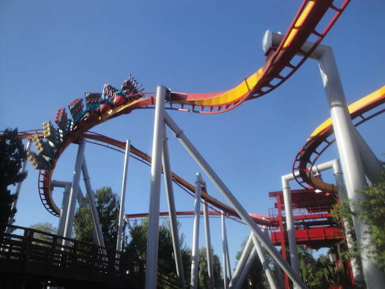

| |

Dueling Dragons (Fire) Editorial & Review

All right. So I've reviewed a lot of different roller coasters. I've reviewed roller coasters that NOBODY, including myself, gives a crap about. I've reviewed tiny little kiddy coasters in these puny little Family Entertainment Centers, solely because I've pretty much reviewed every single coaster that I've ridden. Granted, those reviews are pretty much copied and pasted with the only tweaks being changing the location, and the stats for each ride. And the review takes about 2 minutes to make. I can listen to an average radio-length song and finish the review before the song ends. But still. That's two minutes dedicated to a crappy ride I only rode for the sake of credit whoring before never reading that review again. So why am I bringing that up? Mainly to make the point that I review A LOT of different roller coasters. The park reviews that I do for Incrediblecoasters are without a doubt, the most popular things I do, and while it's true that I'm a very small website and this is all done as a hobby (True, I have made ad money from the site, but not NEARLY enough to make Incrediblecoasters my career). The fact that if you google something like...Six Flags Magic Mountain Review, my review of it is on the front page. Hell, it's the #6 result! The only things beating out my Six Flags Magic Mountain review are Tripadvisor, Yelp, a video by Coaster Studios, Theme Park Insider, Theme Park Review, and then me. Incrediblecoasters. And it's not just Six Flags Magic Mountain. Nearly all my park reviews are either on the front page, the 2nd page if it's a more popular park. They continously rank up high if you google "Insert Theme Park Here" Reviews. The only parks where I don't rank are Disney Parks and Universal Parks, because those are such major tourist destinations, that so many people are covering them, that I get drowned out. Aside from a handful of my most successful videos on Youtube, they are the most popular things I've written.
"OK! Stop!" some of you are probably saying right now. "I didn't click to read about you talking about your own reviews! I came to read about Dueling Dragons! Why are you talking about how your reviews are written?".
 "STOP!!! JUST STOP!!!"
"STOP!!! JUST STOP!!!"
The reason I brought up everything regarding my reviews is because...this is going to be a different kind of review. Normally, my reviews give a detailed summary of all that the ride does, tell some jokes, if it's a racing or dueling coaster, I scream out some stupid shit where I act overly aggresive and hostile about something as silly as coaster racing, and just scream at all the people on the other side of the train, before giving out a summary of the ride, and either recommending the ride to readers, or telling them that the ride I'm reviwing sucks and that they should avoid the ride. And while I will do that in this review, there's A LOT that we have to talk about before we can do that.
Now this may seem like there isn't a lot to talk about. Dueling Dragons was two coasters. They were demolished. I've reviewed several coasters that have been demolished. I put up the tombstone photo (BTW, I'm going to redo that one of these days. It's terrible looking and this site deserves better. Not sure when, as...it's low on my priority list, but I will create a new tombstone photo for defunct coasters. Oh, and I'm going to make a special Dueling Dragons tombstone photo just for these two rides), I put everything in past tense as the review is now in the past, and maybe say a sad thing if it was a particularly good ride. Why does Dueling Dragons have to have all this talk about it?
However, I'm sure you know that there are two types of coasters that are worth going into extreme detail about. The worst rides ever and the best rides ever. And Dueling Dragons together were some of the best rides ever. Seriously, these things were on my Top 10 Steel Coasters List for about a year. However, it lost its spot when Universal essentially decided to neuter the ride in 2011. As many of you know, Dueling Dragons was two really good B&M Inverts that dueled with one another. Yes, the two Inverts were a ton of fun on their own, which is why I still really appreciated the ride, even when neutered. However, it was the dueling that took this ride from really good, into world class and propelled it way up in my Top 10 Steel Coasters list. Now, if Dueling Dragons had never been neutered, it likely would've still fallen off the list simply due to all the great new rides, though it might still be holding on in the lower half possibly. But yeah. Universal Orlando argued that the ride had to be neutered due to a few loose items. OH COME THE FUCK ON!!!! EVEN SIX FLAGS MAGIC MOUNTAIN CAN DUEL TWISTED COLLOSUS WITHOUT ANY ISSUES!!! OK, there are the issue of operations and how you generally don't duel due to poor operations and the trains not lining up. But you still CAN duel on Twisted Collosus. You can get lucky and still do all the cool stuff that the ride was designed to do, whereas Universal didn't just stop trying to make Dueling Dragons duel. No, they went above and beyond in making sure that these rides NEVER dueled, sometimes delaying the ride SOLELY to ensure that they never dueled, doing essentially, the opposite of what the ride was intended (When it first opened, if there were operating problems, the first Dragon would stop and wait for the other dragon to catch up so they could duel). Yeah, Universal neutering Dueling Dragons was the first snowball that led to the avalanche of my issues that I have with Universal Orlando.
 "Hey. I may not quite be dueling here, but AT LEAST I'M FUCKING TRYING UNIVERSAL ORLANDO!!!"
"AT LEAST I'M FUCKING TRYING!!!"
"Hey. I may not quite be dueling here, but AT LEAST I'M FUCKING TRYING UNIVERSAL ORLANDO!!!"
"AT LEAST I'M FUCKING TRYING!!!"
The next thing that helped create the Universal Avalanche was in 2015 when they went absolutely apeshit and developed a fetish for security theater. Universal had always been strict with loose items, but it had always been...standard. But then they developed the No Zippered Pocket rule. FUCK YOU!!! Seriously, I fucking HATE the bullshit about nothing in zippered pockets. ZIPPERS ARE SECURE!!! DO WHATEVER!!! THEY WILL NOT FALL OUT!!! DO YOU NOT KNOW HOW ZIPPERED POCKETS WORK!!? Hearing parks argue that zippered pockets are a threat makes me want to blast the You Are An Idiot virus song at them (though to be fair, I want to blast that song at so many people. After 2016, it should probably be our national anthem). But anyways, the zipper bullshit is infuriating, but it's not just Universal that perpetuates it (Tivoli Gardens, I love you, but the zipper crap is fucking embarassing for you guys). But that's not enough. For Universal Orlando installed METAL DETECTORS for all of the rides!! Every time you want to ride the Incredible Hulk or Rockit, you have to go through metal detectors. ARE YOU FUCKING KIDDING ME!!? I know I've complained about Security Theater in past updates (Just a quick rehash. Security Theater is a series of pointless pain in the ass measures that don't make you safer, but trick gullible people into thinking that they are now safer), but the Security Theater was all just to get into the park. Ugh. Annoying. Stupid. But whatever. But when you have to go through metal detectors EVERY SINGLE TIME you want to ride a roller coaster, it's going to make you angry. And of course, they also have those stupid fucking wands that they wave down on you every time you get in line. And of course, I've heard that they are all extremely rude about the whole ordeal. Sure, I'm sure there are some nice ones #NotAllUniversalSecurityGuards, but look at me! I'm talking about the TSA! I'm talking about the fucking TSA! Except I'm boarding a roller coaster! Not an airplane! And I hate airport security, and all that security theater. But at least the reasoning behind that bullshit was logical! Planes were flown into skyscrapers, causing the biggest terrorist attack ever, and killing 3,000 people. That's the reason we're we told need the bullshit security theater for airplanes. Here, you might lose your phone. It'll almost certainly just shatter on the ground in a restricted area somewhere, and if not, those nets will likely grab it. And on top of that, it's SECURITY THEATER!!! IT'S NOT GOING TO WORK!!!! At least with airport security, it's part of just a misreable experience. Get up early, do the security theater bullshit, spend hours on a plane to fly across the country (or across the ocean), and yadi yada. Here, you're at an amusement park. You're supposed to be getting AWAY from the bullshit!!! Not having to endure it every time you want to ride the roller coaster. It's around this time that Universal lost its spot on the Top 10 Theme Parks List.
 This is a random photo I found of some dude getting groped by Airport Security.
You'll likely experience something very similar if you want to ride a roller coaster here.
This is a random photo I found of some dude getting groped by Airport Security.
You'll likely experience something very similar if you want to ride a roller coaster here.
However, in September of 2017, Universal Orlando pretty much commited the ultimate sin, and they got rid of Dueling Dragons, which pretty much was the nail in the coffin. Parks get rid of roller coasters very frequently. But usually, they get rid of something crappy, or recently, the trend is to tear down their old and busted wooden coaster, and turn it into a hot new RMC, which are now officially everywhere. True, a couple of those wooden coasters, I liked and found to be good rides. But their RMC replacements have always been better. Plus, many of those demolished coasters aren't even gone. They just moved on to another park. There have even been many instances of parks tearing out beloved rides that pisses off coaster enthusiasts. For instance, Blackpool Pleasure Beach recently just demolished their Wild Mouse. And no, their Wild Mouse wasn't just yet another standard generic Wild Mouse. This was an old classic wooden mouse that was apparently crazy. Now, I've never been to Blackpool Pleasure Beach. But it makes me sad that I'll never get to ride that ride. But ultimately it's mainly just enthusiasts that care about it being demolished.
"You see Kevin? This isn't a big deal. Universal Orlando did nothing wrong. This is just a bunch of roller coaster nerds getting mad over silly roller coaster nerdiness. Nobody who isn't a roller coaster enthusiast cares about this. So shut up and get over it."
Actually hypothetical anonymous asshole I created as a representative of all the actual anonymous assholes on the internet, this isn't just coaster enthusiasts who are angered about this decision. The general public is unhappy with this decision! And I don't just mean Orlando locals! The majority of everyone that I've heard about the news about Dueling Dragons dissaproved. Hell, my cousin, who is NOT a roller coaster enthusiast AT ALL, but she does travel a lot, and rode it when she and some friends went to Universal Orlando, because that really is a major park that attracts people in the same way Disney does, and when she heard that it was torn down, she was saddened to hear about that. And from what I heard, this was the case with the majority of NON-COASTER ENTHUSIASTS!!! Of course, coaster enthusiasts are generally more upset about this since....we're coaster enthusiasts! Roller coasters are sort of our schtick. And I don't think ANY other enthusiast is going into this much detail about the demolition of these two coasters as I am. But hey. These were some of the best coasters in the entire industry. So to have the park just throw away these universally loved rides, I'm sorry. This is the dumbest and worst park decision ever.
Now prior to this, the worst park decision technically wasn't even a theme park decision. It was Wild Rivers closing down (FUCK YOU IRVINE COMP!!!). That decision to bulldoze the best water park in California angered me. It deeply angered me, to the point where whenever I mention Wild Rivers, I ALWAYS will give a "FUCK YOU IRVINE COMP!!!". I always say that whenever Wild Rivers is brought up (FUCK YOU IRVINE COMP!!!). Now, Wild Rivers didn't just choose to close for their own good. Irvine Comp is the company that destroyed Wild Rivers and built the houses that now sit on top of its grave. As you can clearly see, I don't like Irvine Comp. I think that's pretty obvious just by how often I scream "FUCK YOU" at them. But this Dueling Dragons decision, that's so bad that it even makes Irvine Comp's judgement seem not as bad! Congratualations Universal Orlando! You're getting me to defend FUCKING IRVINE COMP!!!
 Fuck you Irvine Comp.
Fuck you Irvine Comp.
No. I'm not going to now always "FUCK YOU UNIVERSAL ORLANDO!!!" whenever Dueling Dragons is brought up in the same way I always say "FUCK YOU IRVINE COMP!!!" whenever people talk about Wild Rivers (FUCK YOU IRVINE COMP!!!). However, I do want to give out a good "FUCK YOU UNIVERSAL ORLANDO!!!" for all this. Fuck you for all the stuff I mentioned earlier, but ESPCIALLY FUCK YOU for this. I think the ONLY time I ever was hostile to a park and literally said "FUCK YOU!!!" to them on social media was when this was announced. No, I'm not going to boycott Universal. I'm not even going to try. They simply have too much for me to go back for. I'm not going to forgoe Rockit, or those water rides. It's too big to just completely write off. I mean, if they got rid of the in-park TSA for everything, I'd still really enjoy the park. However, this is going to leave a scar. Even if they get rid of the TSA, operations were great, all that fun stuff, the removal of Dueling Dragons will ALWAYS be noticed. The replacement for the ride would literally have to blow me away, and the rumors I've heard don't appear that they're even going to try. It's just going to be more Harry Potter stuff. UGH.
All right. So I've explained the whole situation with Dueling Dragons. 9 paragraphs in, and I've detailed all the bullshit that led to these two amazing B&Ms unfairly leaving Universal Orlando. Most people are against it. However, there have been arguments from some coaster enthusiasts that this was unavoidable and had to have happened. Many of these enthusiasts are my friends, and I have no issue with them. But...I'm going to attack both of these main arguments that are used. There's the argument that they had to do it for Harry Potter, and I address that argument in my review of Dueling Dragons Ice. And then there's the maintanence argument, which I'm going to tackle right here in the Dueling Dragons Fire review, right down below.
So the main argument the maintanence people have is that Dueling Dragons was simply too worn out, and had to be demolished. It had run too many cycles, was completely worn and torn, and had to be demolished because coasters have a limited lifespan. Well, first off, coasters don't just magically die at a certain point. Yes, it's true that they have to be retracked, remade, and maintained over the years. But there are plenty of coasters that have been around for WAY longer than Dueling Dragons. Here's a coaster so old that it was bombed by Nazis during World War II. There are currently coasters over 100 years old, still running thanks to good maintanence.
 This ride is 104 years old, was firebombed by Nazis, and is STILL going strong. No excuses Universal Orlando.
This ride is 104 years old, was firebombed by Nazis, and is STILL going strong. No excuses Universal Orlando.
"But that's a completely different kind of ride! And Tivoli Gardens isn't open year round! It didn't run in the same way that Dueling Dragons ran!" Ugh. Fine. We'll limit this discussion to B&M Inverts at year round parks. How does that sound!? Luckily, both of my home parks in Southern California, Six Flags Magic Mountain and Knotts Berry Farm, have B&M Inverts that we can talk about. Batman the Ride, and Silver Bullet. Batman has been open since 1994, 5 years earlier than Dueling Dragons. Silver Bullet opened 5 years after Dragons, but has still operated a lot. As these aren't just year round parks in the sense that they're open a couple days in the winter. Knotts Berry Farm is open 364 days a year, only being closed on Christmas. While Six Flags Magic Mountain traditionally was only open on weekends during the offseason, they changed that as now in 2018, Six Flags Magic Mountain is open every single day of the year. Both of these B&M Inverts are open for all that time, and they are able to be maintained easily.

I think Silver Bullet has cycled too many times. Better bulldoze it now. =P
Some of you might be saying that Six Flags Magic Mountain and Knotts Berry Farm are not good enough. "Those parks don't get the crowds that Universal Orlando has to deal with!" OK. How about we move to the other side of the country. How about we go to Florida specifically, the exact same state that Universal Orlando is in. Let's go to the neighboring park, Busch Gardens Tampa. They have a major B&M Invert, Montu. It's older than Dueling Dragons by 3 years, and Busch Gardens hauls ass. I'd be surprised if Montu didn't have a cycle count similar to that of Dueling Dragons. And hey. Montu is doing fine. Hell, I think Busch Gardens even recently released a billboard advertising Montu, as a sort of "Hey Orlando! Unlike our major rival park, we still have OUR B&M Invert! Come to Busch Gardens Tampa!". I'm trying to find that ad, but I can't find it anywhere. Lame, as I love that little passive-agressive jab at Universal Orlando. Oh well. If I find it, I'll link to it here.
"Seriously! Shut the fuck up! I don't give a fuck what you say! I don't give a fuck about you comparing it to coasters from 100 years ago! I don't care about you comparing it to other B&M Inverts at other yearround parks, like Six Flags Magic Mountain, Knotts Berry Farm, and Busch Gardens Tampa. You're not an engineer! You're a coaster critic! So shut the fuck up! Let the people who actually ran the ride talk!"
OK. Fine. Yes, it's true that Universal B&Ms require an INSANE amount of work and maintanence. They had to completely rebuild The Incredible Hulk as part of retracking the ride. And they would've had to do the same to Dueling Dragons. But it would've been totally safe! They TOTALLY could've done that! And it's not me saying that. Like mentioned before, I'm just a roller coaster critic. This is the Tech Services Ride Supervisor for Dueling Dragons saying this! No really. Robb Alvey from Theme Park Review posted on TPR a conversation between the two of them where the Ride Supervisor confirmed that Dueling Dragons could've lasted for at least another 20 years, and that claims that it was now unsafe were bullshit.
 Don't believe me cause I'm just a coaster critic? Fine. Believe the Tech Services Ride Supervisor for Dueling Dragons then.
Don't believe me cause I'm just a coaster critic? Fine. Believe the Tech Services Ride Supervisor for Dueling Dragons then.
So yeah. The former supervisor confirmed that the ride didn't need to die, and yeah. That makes me angry. But I'm sure you got the gist of that throughout the entire...talk about the coasters removal. Now I'm sure some of you will still be talking about how this had to be done for Harry Potter, and I go into the Harry Potter in my Dueling Dragons Ice Review. HOLY SHIT!!! THIS IS A ROLLER COASTER REVIEW!!! Sorry, I kind of forgot as it's pretty much just become a big essay on the removal of Dueling Dragons, as yeah. It's a big deal and I'm airing out all my thoughts on that bullshit right here and in the Ice review. But don't worry. The time has come. So sit back. Let's go back in time to when Dueling Dragons was still running, it was still dueling, and I had nothing but fawning praise for Universal Orlando. It's time to review Dueling Dragons Fire.
We're here at the Universal Orlando Resort to ride Dueling Dragons. After walking through the beautifully themed line, we reach a sign that says "Choose thy fate." We decided to head on over and make Fire our fate. After pulling down the shoulder harness, the floor drops and away we go. Once we reach the lifthill, we meet up with our enemy. Ice Dragon. While going up the lifthill, we scream to the people on Ice "Hey you!! Like playing with Ice? Well eat this!!!!!" After shouting that, you go and spray them all with liquid nitrogen, shake fists at each other and declare yourselves enemies. The Coaster Duel has begun. Once we reach the top of the lifthill, we flip off the people on Ice Dragon before heading our separate ways. We then twist to the left into the first drop. We get quite a lot of speed off that first drop and are now having a lot of fun. But before our feet can touch the water, we roar up into an Immelmann Loop. We roar straight up like if it were a vertical loop, only to twist out of it. We then rush back towards the water. We then rise up into an airtime hill. While we don't get crazy ejector air or anything like that, we do get some nice floater air. But that floater air isn't important right now. Look down. Your enemies are right under you. And they're upsidedown in a Zero G Roll too. Quick. Before they get away, go and spit on their shoes and prove yourselves worthy before it's too late. We then drop back towards the ground. We then roar up into another Immelmann Loop. We flip upsidedown only to twist out of the inversion and after the Immelmann, we rush into a downward helix. After gaining some speed, we head into some straight track when off in the distance, we see our enemies. We rush straight towards them, determined to kick their asses, we then rise straight into a vertical loop. But as we quickly see, Ice has stolen our secret agenda and is now trying to copy our coaster dueling moves. Well we try to extract our anger on them by trying to kick their feet and make them suffer, but we flip upsidedown in the vertical loop before we can make that happen. We then head back towards the ground and go through a little more straight track before slamming straight into a turn. This turn is quite forceful and really whips us through it. We must go off and find Ice so we can make them suffer. We then flip into a corkscrew to attract Ice. But as we flip into our corkscrew, we then realize that those bastards on Ice have stolen our idea. We must fight now, in the corkscrew. We go off and scream "GO FORTH AND DIE!!!!!!" in a blind rage before we twist out of our corkscrew. We then twist into another turn and say to ourselves "I think I've made those bastards on Ice suffer enough today." You then pull out of that turn and fly straight towards home. But before we call it a day, we decide to show up Ice one last time and flip straight into another corkscrew to make those Ice Riding Bastards jealous. Now after flying through that corkscrew, we roar straight through a turn and glide straight into the brake run. Now unlike in Coaster Racing, Coaster Dueling has no winners or losers. You just go and kick each others asses. And we showed those Ice Bastards what Fire is made of, so we're good for now. I would TOTALLY recommend riding this if you are at the Universal Orlando Resort as not only is coaster dueling fun and awesome, but Fire Dragon is a damn good B&M Inverted Coaster. I mean, it's the only one I've ridden that has floater air. So that's pretty unique. One of the best B&M Inverts ever. R.I.P Dueling Dragons. And one final fuck you to Universal Orlando.
9/10
Location: Universal Orlando Resort
Opened: 1999
Murdered: September 4, 2017
Built by: B&M
Last Ridden: November 20, 2007
Dueling Dragons (Fire) Photos


Home
|